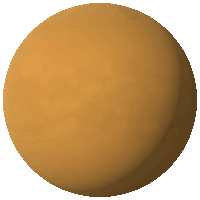

Saturn's largest moon, Titan, is an icy world whose surface is completely obscured by a golden hazy atmosphere. Titan is the second largest moon in our solar system. Only Jupiter's moon Ganymede is larger, by just 2 percent. Titan is bigger than Earth's moon, and larger than even the planet Mercury.
This mammoth moon is the only moon in the solar system with a dense atmosphere, and it's the only world besides Earth that has standing bodies of liquid, including rivers, lakes and seas, on its surface. Like Earth, Titan's atmosphere is primarily nitrogen, plus a small amount of methane. It is the sole other place in the solar system known to have an earthlike cycle of liquids raining from clouds, flowing across its surface, filling lakes and seas, and evaporating back into the sky (akin to Earth's water cycle). Titan is also thought to have a subsurface ocean of water.
Namesake
Dutch astronomer Christiaan Huygens discovered Titan on March 25, 1655. Huygens called his discovery "Luna Saturni," which is Latin for Saturn moon. The name Titan came from John Herschel, son of astronomer William Herschel. Titans are from Greek mythology.
Potential for Life
The methane in Titan's atmosphere is what makes its complex atmospheric chemistry possible, but where all that methane comes from is a mystery. Because sunlight continuously breaks down methane in Titan's atmosphere, some source must be replenishing it or it would be depleted over time. Researchers suspect methane could be belched into Titan's atmosphere by cryovolcanism—volcanoes releasing chilled water instead of molten rock lava—but they're not certain if this or some other process is responsible.
The Cassini spacecraft's numerous gravity measurements of Titan revealed that the moon is hiding an underground ocean of liquid water (likely mixed with salts and ammonia). The European Space Agency's Huygens probe also measured radio signals during its descent to the surface, in 2005, that strongly suggested the presence of an ocean 35 to 50 miles (55 to 80 kilometers) below the icy ground. The discovery of a global ocean of liquid water adds Titan to the handful of worlds in our solar system that could potentially contain habitable environments. Additionally, Titan's rivers, lakes and seas of liquid methane and ethane might serve as a habitable environment on the moon's surface, though any life there would likely be very different from Earth's life. Thus, Titan could potentially harbor environments with conditions suitable for life—meaning both life as we know it (in the subsurface ocean) and life as we don't know it (in the hydrocarbon liquid on the surface). Although there is so far no evidence of life on Titan, its complex chemistry and unique environments are certain to make it a destination for continued exploration.
Size and Distance
Titan has a radius of about 1,600 miles (2,575 kilometers), and is nearly 50 percent wider than Earth's moon. Titan is about 759,000 miles (1.2 million kilometers) from Saturn, which itself is about 886 million miles (1.4 billion kilometers) from the Sun, or about 9.5 astronomical units (AU). One AU is the distance from Earth to the Sun. Light from the Sun takes about 80 minutes to reach Titan; because of the distance, sunlight is about 100 times fainter at Saturn and Titan than at Earth.
Orbit and Rotation
Titan takes 15 days and 22 hours to complete a full orbit of Saturn. Titan is also tidally locked in synchronous rotation with Saturn, meaning that, like Earth's Moon, Titan always shows the same face to the planet as it orbits. Saturn takes about 29 Earth years to orbit the Sun (a Saturnian year), and Saturn's axis of rotation is tilted like Earth's, resulting in seasons. But Saturn's longer year produces seasons that each last more than seven Earth years. Since Titan orbits roughly along Saturn's equatorial plane, and Titan's tilt relative to the sun is about the same as Saturn's, Titan's seasons are on the same schedule as Saturn's—seasons that last more than seven Earth years, and a year that lasts 29 Earth years.
Structure
Titan's internal structure isn't entirely known, but one model based on data from the Cassini-Huygens mission suggests Titan has five primary layers. The innermost layer is a core of rock (specifically, water-bearing silicate rock) about 2,500 miles (4,000 kilometers) in diameter. Surrounding the core is a shell of water ice—a special type called ice-VI that is only found at extremely high-pressures. The high-pressure ice is surrounded by a layer of salty liquid water, on top of which sits an outer crust of water ice. This surface is coated with organic molecules that have rained or otherwise settled out of the atmosphere in the form of sands and liquids. The surface is hugged by a dense atmosphere.
Formation
Scientists aren't certain about Titan's origin. However, its atmosphere provides a clue. Several instruments on the NASA and ESA Cassini-Huygens mission measured the isotopes nitrogen-14 and nitrogen-15 in Titan's atmosphere. The instruments found Titan's nitrogen isotope ratio most resembles that found in comets from the Oort Cloud—a sphere of hundreds of billions of icy bodies thought to orbit the Sun at a distance between 5,000 and 100,000 astronomical units from the Sun (Earth is about one astronomical unit from the Sun—roughly 93 million miles or 150 million kilometers). Titan's atmospheric nitrogen ratio suggests the moon's building blocks formed early in the solar system's history, in the same cold disk of gas and dust that formed the Sun (called the protosolar nebula), rather than forming in the warmer disk of material that Saturn later formed from (called the Saturn sub-nebula).
Surface
The surface of Titan is one of the most Earthlike places in the solar system, albeit at vastly colder temperatures and with different chemistry. Here it is so cold (-290 degrees Fahrenheit or -179 degrees Celsius) that water ice plays the role of rock. Titan may have volcanic activity as well, but with liquid water "lava" instead of molten rock. Titan's surface is sculpted by flowing methane and ethane, which carves river channels and fills great lakes with liquid natural gas. No other world in the solar system, aside from Earth, has that kind of liquid activity on its surface.
Vast regions of dark dunes stretch across Titan's landscape, primarily around the equatorial regions. The "sand" in these dunes is composed of dark hydrocarbon grains thought to look something like coffee grounds. In appearance, the tall, linear dunes are not unlike those seen in the desert of Namibia in Africa. Titan has few visible impact craters, meaning its surface must be relatively young and some combination of processes erases evidence of impacts over time. Earth is similar in that respect as well; craters on our planet are erased by the relentless forces of flowing liquid (water, in Earth's case), wind, and the recycling of the crust via plate tectonics. These forces are present on Titan as well, in modified forms. In particular, tectonic forces—the movement of the ground due to pressures from beneath—appear to be at work on the icy moon, although scientists do not see evidence of plates like on Earth.
Atmosphere
Our solar system is home to more than 150 moons, but Titan is unique in being the only moon with a thick atmosphere. At the surface of Titan, the atmospheric pressure is about 60 percent greater than on Earth—roughly the same pressure a person would feel swimming about 50 feet (15 meters) below the surface in the ocean on Earth. Because Titan is less massive than Earth, its gravity doesn't hold onto its gaseous envelope as tightly, so the atmosphere extends to an altitude 10 times higher than Earth's—nearly 370 miles (600 kilometers) into space.
Titan's atmosphere is mostly nitrogen (about 95 percent) and methane (about 5 percent), with small amounts of other carbon-rich compounds. High in Titan's atmosphere, methane and nitrogen molecules are split apart by the Sun's ultraviolet light and by high-energy particles accelerated in Saturn's magnetic field. The pieces of these molecules recombine to form a variety of organic chemicals (substances that contain carbon and hydrogen), and often include nitrogen, oxygen and other elements important to life on Earth.
Some of the compounds produced by that splitting and recycling of methane and nitrogen create a kind of smog—a thick, orange-colored haze that makes the moon's surface difficult to view from space. (Spacecraft and telescopes can, however, see through the haze at certain wavelengths of light outside of those visible to human eyes.) Some of the heavy, carbon-rich compounds settle to the moon's surface—these hydrocarbons play the role of "sand" in Titan's vast dune fields. And methane condenses into clouds that occasionally drench the surface in methane storms.